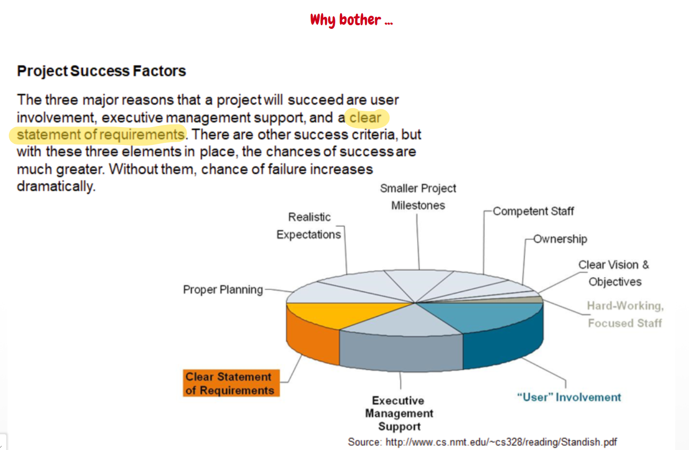
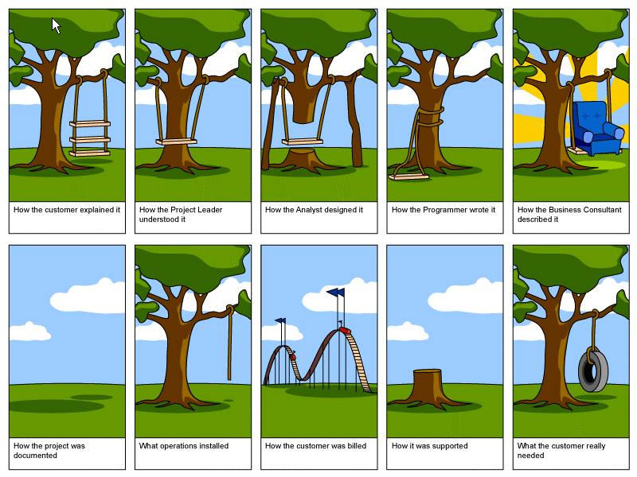
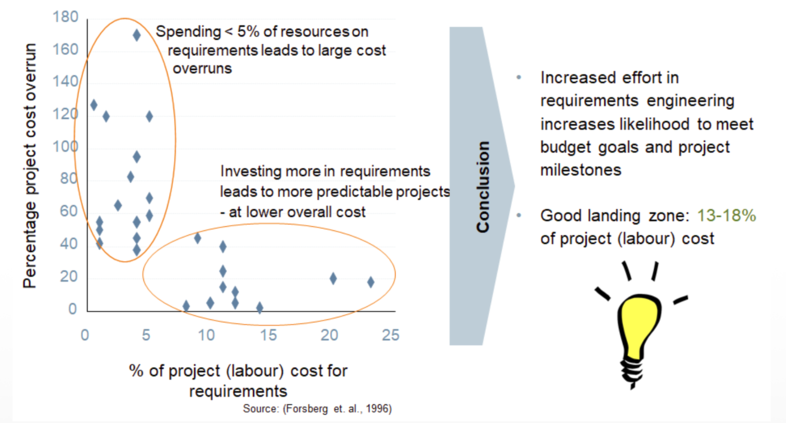
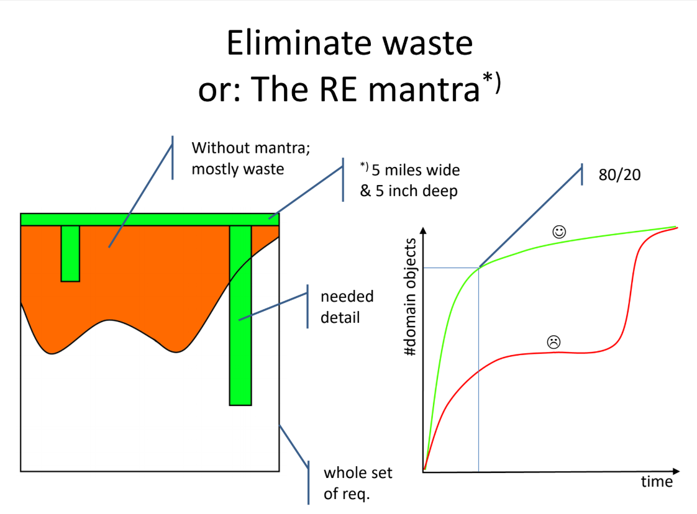
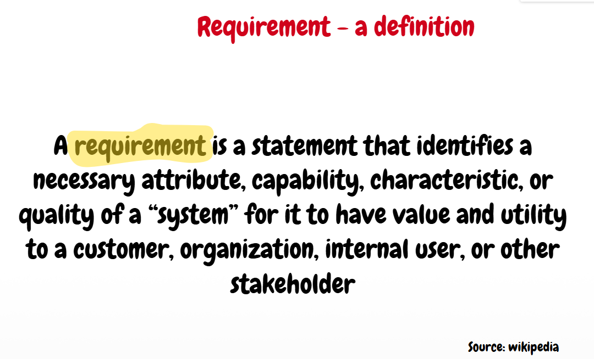

1. Requirements Engineering (RE) — General Introduction
#Why Requirements Engineering matters and what the optimal investment looks like
Requirements Engineering (RE) is the absolute foundation of a successful software project and often determines its overall triumph or fatal failure.

| # | Project Success Factors | % of Responses |
|---|---|---|
| 1 | User Involvement | 15.9% |
| 2 | Executive Management Support | 13.9% |
| 3 | Clear Statement of Requirements | 13.0% |
| 4 | Proper Planning | 9.6% |
| 5 | Realistic Expectations | 8.2% |
| 6 | Smaller Project Milestones | 7.7% |
| 7 | Competent Staff | 7.2% |
| 8 | Ownership | 5.3% |
| 9 | Clear Vision & Objectives | 2.9% |
| 10 | Hard-Working, Focused Staff | 2.4% |
| Other | 13.9% |
Failures during RE are illustrated by the comic strips "How the customer explained it vs. what the customer actually needed"


Without a proper understanding of requirements there is a massive gap between expectations and the delivered product. Customers often do not know exactly what they want until they see it, and different stakeholders speak in different "languages." If the RE phase fails, the result is massive budget waste, a failure to deliver business value, and the development of features that nobody uses. The Software Architect (SWA) must therefore never be cut off from the requirements-gathering phase. RE defines the "problem" that the architecture is meant to solve. The later a requirements error is discovered (e.g., not until the testing or production phase), the exponentially more expensive it is to fix.
Optimal investment and the RE Mantra:
Underestimating the requirements gathering and analysis phase poses a critical risk to a software project. Empirical studies (such as Forsberg et al., 1996) demonstrate a direct proportional relationship between investment in requirements engineering (RE) and the resulting predictability of the project's total costs.
- Risk of underestimation (underinvestment): If less than 5% of the project's total (labor) resources are invested in defining and analyzing requirements, this generally leads to massive and highly unpredictable overruns of the total budget. An inadequately defined specification makes expensive modifications and rework necessary in later development phases .
- Benefit of adequate investment: Increased effort devoted to requirements engineering in the early phases demonstrably increases the likelihood that a project will meet its budget targets and established milestones. Greater investment in this phase makes projects much more predictable and ultimately reduces their total costs .
- Optimal range (Good landing zone): To achieve the best balance between the effort invested in preparation and minimizing the risk of cost overruns, it is recommended to allocate 13% to 18% of the total project costs to requirements engineering . This target zone represents an ideal balance that prevents both underestimating analysis and, conversely, unnecessary "analysis paralysis".

A project should not fall into the opposite extreme either — the so-called "Analysis Paralysis" (over-analyzing everything down to the last detail, which blocks the actual development and delays the product launch). Pareto's rule (80/20) applies here — empirical studies show that often only roughly 20% of requirements have a real architectural impact (so-called Architecturally Significant Requirements — ASRs). These requirements fundamentally affect the structure, technologies, and core properties of the system.
The main leitmotif (mantra) of RE is "Eliminate waste". Waste is not only writing code the customer does not need, but also writing hundred-page specifications that nobody will read.

The SWA should adhere to the principle of "5 miles wide, 5 inches deep" during analysis. In practice this means:
5 miles wide: This part of the principle defines the breadth of the overview. The software architect must not have a narrow outlook but must instead have a broad and comprehensive overview of the overall context In practice, this means that the architect must: * See the so-called "big picture" of the entire project * Be familiar with the broader business domain * Know all stakeholders and understand their motivations * Have an overview of all requirements at a surface level
5 inches deep: They dive into deep technical detail (analysis) only for those selected requirements (ASRs) that:
* Represent a real architectural risk * Conceal significant financial costs (so-called cost drivers) * Are critical for the system's quality attributes (NFRs) – for example, if the customer requires extreme availability, the architect must go into detail and design a complex database replication strategy
Conversely, for a functional requirement to "change the color of a button", they remain at the surface and leave detailed analysis to others (such as UI/UX designers) .
#Definition of "Requirement" and 7 tasks for the SWA (ASRs)
A requirement is defined according to standards (e.g., IEEE) as a condition or capability that a user needs to solve a problem or achieve a goal, or a condition that a system must satisfy in order to comply with a contract, standard, or formal specification. It is a commitment that the system will exhibit certain behaviour or properties.

** Key tasks for the SWA with respect to ASRs (Architecturally Significant Requirements):**
- Identification: Recognizing which of the thousands of requirements are architecturally significant. Changing the color of a button is not an ASR. A requirement for a response time of 10 milliseconds under a load of 100,000 users is a critical ASR.
- Elicitation (Gathering and mining): The SWA does not passively wait for a document from the analysts. They actively gather hidden technical and qualitative requirements from stakeholders, asking about constraints and historical context ("Why was it done that way before?").
- Analysis: Assessing technical feasibility and uncovering conflicts. The architect often finds that two requirements are in opposition (e.g., a requirement for maximum network throughput conflicts with a requirement for complex asymmetric encryption of all communication).
- Specification and Concretization: Transforming vague wishes ("we want it to be fast") into precise, measurable metrics, ideally using formalized quality scenarios.
- Validation: Continuously verifying whether the proposed architecture truly satisfies these ASRs and whether the technical constraints align with business goals.
- Trade-off management: Negotiating about unrealistic requirements. The SWA must be able to challenge "over-aggressive" requirements (e.g., whether "five nines" availability — 99.999%, meaning a maximum of 5 minutes of downtime per year — is truly necessary, as it requires enormous infrastructure investment).
- Documentation and Traceability: Recording the links between ASRs and specific architectural decisions (Architecture Decision Records — ADRs), so that even years later it is clear why exactly this solution was chosen.
- Management and maintenance (Requirements Management & Maintenance): Proactively maintaining, refining, and updating requirements throughout the entire product lifecycle. The SWA continuously responds to changes (Change Management), performs Impact Analysis on the architecture when the specification is modified, and ensures that the design and documentation remain consistent with the project's current needs.